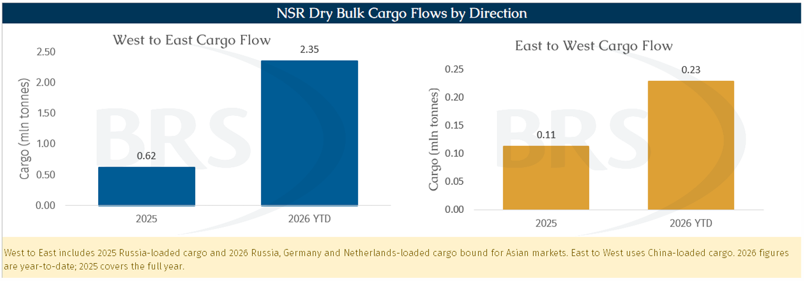
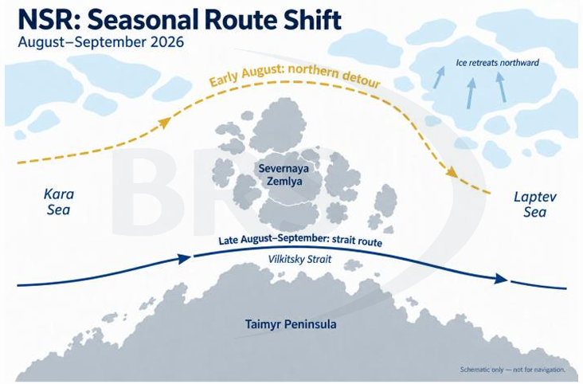

Over the past few years, changing Arctic sea-ice conditions, together with renewed Russian efforts to develop the Northern Sea Route (NSR), have brought the route back into the shipping market spotlight. These efforts have included the continued expansion of Rosatom’s nuclear-powered icebreaker fleet, plans to facilitate year-round navigation, and closer cooperation with China on Arctic shipping and the development of ice capable tonnage. The NSR’s main attraction is its potential to significantly shorten sailing distances between Northeast Asia and Northern Europe, theoretically reducing voyage time, fuel consumption and vessel employment days.
South Korea provides a recent example. The containership PanStar Acro (built 2011 / Guangzhou Wenchong Shipyard) departed Busan on 22 August, sailed along Russia’s Arctic coast and called at Felixstowe, Rotterdam and Gdansk before returning to Busan via the NSR on 10 October. The full round voyage took 50 days. Assuming an average speed of 16 knots, the round trip could save around 17 days compared with the equivalent route via the Suez Canal. On a one-way basis, the northern route is approximately 30-35% shorter than the conventional route via the Suez Canal, while also avoiding geopolitical risks concentrated in the Middle East South Korea has also been encouraging domestic shipping companies to explore Arctic routes. Since 2014, the government has reportedly offered a 50% reduction in port facility charges for vessels calling at domestic ports after using Arctic shipping routes.
The rising number of voyages does not mean that the NSR is ready to replace the Suez Canal. For the dry bulk market, the more relevant question is whether it is beginning to offer commercial value in specific cargo trades and vessel deployment scenarios.
According to September data from the Centre for High North Logistics (CHNL), the number of transit voyages through the NSR had already reached 104 in 2026, surpassing the 103 recorded throughout 2025. Meanwhile, the combined deadweight tonnage of transiting vessels reached approximately 7.8mln Dwt during the first nine months of 2026, compared with 6.2mln Dwt for the whole of 2025, an increase of approximately 26%. These figures cover a broad range of vessel types, including bulk carrier, tanker container, LNG carrier General cargo, Heavy load, Fishing, SAR and Research. Importantly, the faster increase in aggregate Dwt relative to transit numbers suggests a shift towards higher average vessel capacity on the route, potentially indicating improving economies of scale as NSR traffic expands.
The development of the NSR also needs to be considered alongside the evolution of Russia’s icebreaker fleet. Moscow has been progressively expanding its nuclear icebreaking capacity as it seeks to support higher Arctic cargo volumes and gradually extend navigation beyond the traditional summer season. In this sense, the icebreaker fleet represents a critical piece of infrastructure: without sufficient escort capacity, growth in Arctic shipping will remain constrained regardless of investment in ports or cargo-generating projects. Yet icebreakers address only one side of the equation. A meaningful expansion of year-round NSR traffic will also require a corresponding increase in ice-class merchant tonnage. Consequently, the pace at which Russia can expand both its icebreaker fleet, and the pool of commercially available ice-capable vessels will be an important determinant of how quickly the NSR can evolve into a higher-volume transport corridor.
Furthermore, the composition of vessels using the route appears to be evolving. Rather than remaining predominantly the preserve of specialised ice-class tonnage, the NSR is increasingly attracting larger conventional commercial vessels. Among these, bulk carriers are emerging as a particularly interesting segment, raising questions over the route's potential implications for dry bulk trade patterns and vessel positioning.

Eastbound: An Emerging Cargo Corridor
According to AXSMarine data, eastbound dry bulk activity associated with the NSR has increased significantly so far this year compared with the whole of 2025.
In 2025, total eastbound cargo volumes reached 0.62 mln tonnes, including approximately 0.53 mln tonnes shipped from Murmansk, St Petersburg and Dudinka to Asian markets. By 2026 YTD, eastbound volumes had risen sharply to approximately 2.33 mln tonnes under the same directional methodology. Murmansk remains the dominant origin, contributing around 1.43 mln tonnes, while Ust-Luga ranks second with approximately 0.43 mln tonnes. Combined, the two ports account for around 80% of total eastbound cargo volumes. The increase in both volume and port coverage suggests that NSR-related eastbound dry bulk activity is beginning to display the characteristics of a cargo corridor linking Russian and Northern European supply with Asian markets.
Westbound: Potentially More Interesting for Repositioning
Westbound activity remains smaller but is also increasing. In 2025, this accounted for approximately 0.10m mt of cargo. So far in 2026, this has totalled approximately 0.22m mt, including a voyage from Nakhodka to Belfast.
The expansion of westbound cargo flows suggests that the NSR may offer more than simply a route for moving cargo towards Asia. It could also provide a commercial option for vessels repositioning towards western Russia and European markets.
In other words, eastbound activity more directly highlights the NSR’s potential as a cargo corridor, while westbound activity points towards an additional role in cross-regional vessel repositioning.
Bulk carriers operate largely on a tramp basis which makes the economics of the NSR relevant. Owners and operators are therefore constantly considering where the next cargo will be available after completing the previous voyage, how long the ballast leg will be, how quickly a vessel can reposition towards the next loading area, and whether the days saved are sufficient to compensate for the additional costs associated with Arctic navigation.For the NSR, this means that even without becoming a major cargo corridor in its own right, the route could still create commercial value if it allows vessels to shorten ballast repositioning between the Atlantic and Pacific during the Arctic summer navigation season.
More than 80% of the bulk carriers currently using the NSR are Chinese-owned, while most are over 20 years old. According to AXSMarine, one 20-year-old Chinese-owned bulk carrier departed Huanghua, China, in late July this year and sailed north through the NSR before arriving at Klaipeda, Lithuania. The voyage took 35 days.
The voyage provides an interesting example of bulk carriers beginning to test the NSR beyond its traditional Arctic trades, potentially extending its application towards broader Asia-Europe commercial transit.

Nonetheless, the Limitations remain significant. The increase in voyages during 2026 provides an encouraging signal, but at least three major constraints remain. Seasonality is still a major limitation. According to CHNL data, vessels were required to navigate north of Severnaya Zemlya via a higher-latitude route in early August. As ice conditions improved later in the month, traffic gradually returned to the Vilkitsky Strait. A more continuous open-water corridor only emerged during September, while renewed ice formation typically becomes a consideration again by around mid-October.
For conventional bulk carriers, the most commercially attractive open-water navigation window therefore remains relatively narrow. Moreover, shorter distance does not necessarily mean lower total cost, as a shorter voyage does not automatically translate into better economics. The calculation must also take into account ice-class requirements, icebreaker support, insurance premiums, Arctic navigation requirements, weather and ice uncertainty, sanctions and regulatory restrictions, emergency response capability and, ultimately, cargo availability.The real commercial question is therefore whether the savings in sailing time and fuel consumption are sufficient to offset the additional costs and risks associated with using the NSR.
Even if an increasing number of bulk carriers are technically able to navigate the NSR, this does not mean that substantial cargo flows will immediately follow. Dry bulk routing is ultimately determined by cargo availability and freight economics. Individual voyages should therefore be interpreted as early commercial experiments rather than evidence that a mature China-Europe dry bulk corridor has already been established.
Improving ice conditions may be extending the practical navigation window, but the availability of suitable ice-class tonnage remains another constraint on the NSR’s development into a more regular dry bulk corridor. BRS in-house vessel data identifies 269 ice-class vessels globally in the 5,000–30,000 Dwt segment, of which 266 currently have available AIS positioning data. Yet only 33 vessels, or 12.4% of the AIS-observed fleet, were positioned across the wider North Atlantic, Baltic and Finnish trading areas at the time of our review. Ownership is also highly fragmented, the ten largest beneficial owners account for just 69 vessels, or 25.7% of the identified fleet, while China alone represents 106 vessels, equivalent to 39.4%.
This suggests that while a pool of ice-capable minibulk tonnage does exist, immediately accessible supply in the traditional Atlantic ice-trading market remains relatively limited. Market feedback also indicates that ice-class capability typically attracts a meaningful premium when required, particularly around Ust-Luga, St Petersburg and the wider Baltic, with winter conditions further tightening suitable vessel availability. Forward voyage fixtures appear more common than spot employment, while some vessels operate under COAs. As the navigation window expands, fleet availability and the associated premium for ice-capable tonnage could consequently become an increasingly important constraint on attempts to turn the NSR from a seasonal opportunity into a scalable dry bulk artery.
An alternative seasonal corridor, not an alternative to Suez
The NSR is emerging as an alternative seasonal corridor for dry bulk shipping rather than an alternative to Suez.
The developments seen in 2026 suggest that the NSR is gradually evolving from a route primarily serving Arctic resource exports and specialised ice-going vessels towards one that is increasingly accessible to conventional commercial tonnage.
For dry bulk shipping, its near-term commercial value is unlikely to come from replacing the Suez Canal. Instead, it may provide an additional seasonal option for specific cargo flows and for vessel repositioning between the Atlantic and Pacific.
If the navigation window continues to lengthen, more conventional bulk carriers become capable of using the route, Asia-Europe cargo flows continue to expand, and voyage economics are validated across a larger number of commercial voyages, the NSR’s relevance to dry bulk could gradually evolve from opportunistic routing into a commercially relevant seasonal corridor.